Curso básico de creación de skins de Osu!
Bienvenido al curso de creación de skins para Osu! nivel básico, aquí aprenderas a hacer un selector de canciones (Menú) sencillo, un rankin panel y como no, un gameplay, lo más importante es la práctica así que no desistas si tienes dificultad, todos las hemos tenido, tenemos y tendremos a lo largo de nuestra vida, todo es cuestión de práctica así que si de verdad te gusta esto y quieres ser un skinner profesional a la altura de Cyperdark, iSmilez, Flowfy o -Susei tienes que tener perseveracia, tener profesionalismo y mucha pero MUCHA paciencia
Requisitos:
- Osu! instalado, obviamente
- Photoshop o cualquier otro lugar donde puedas editar comodamente
- Algunas skins ya descargadas
- Creatividad
- Ganas de aprender y mucho entusiasmo
Selector de canciones
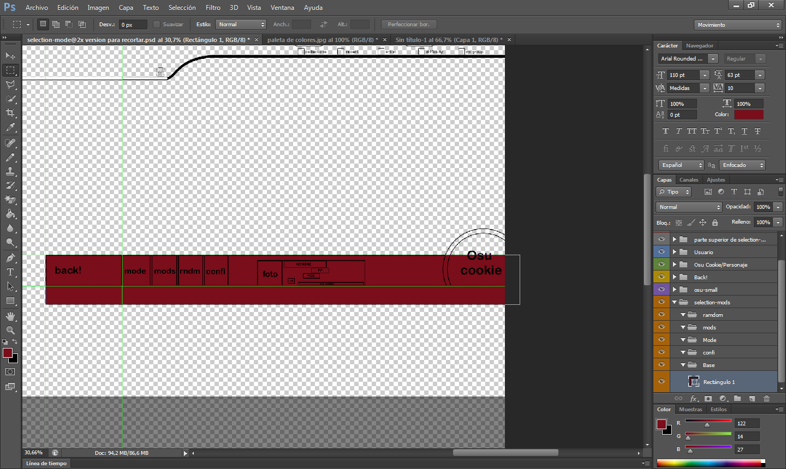
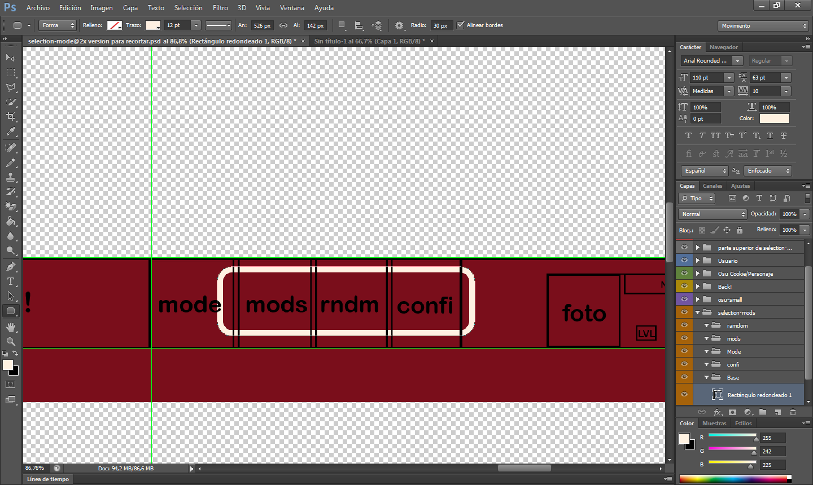
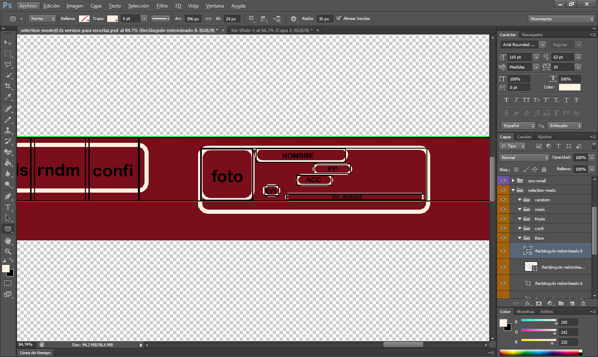
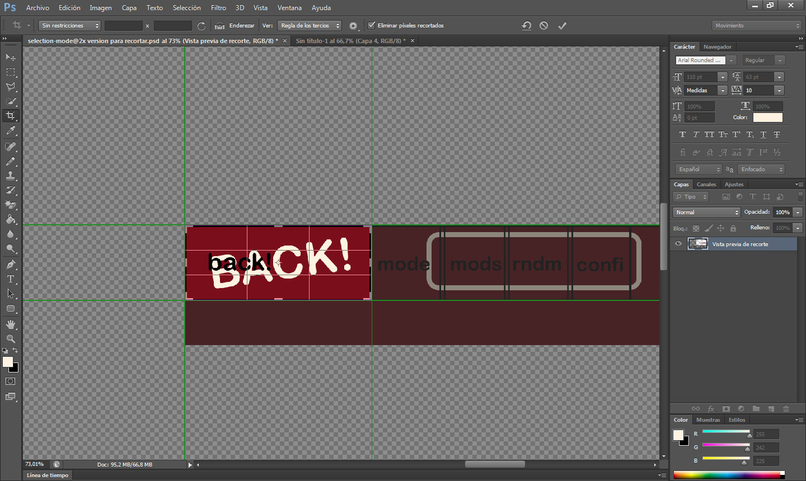
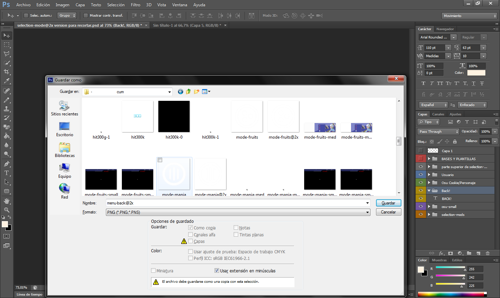
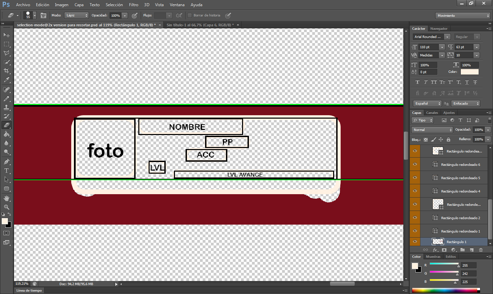
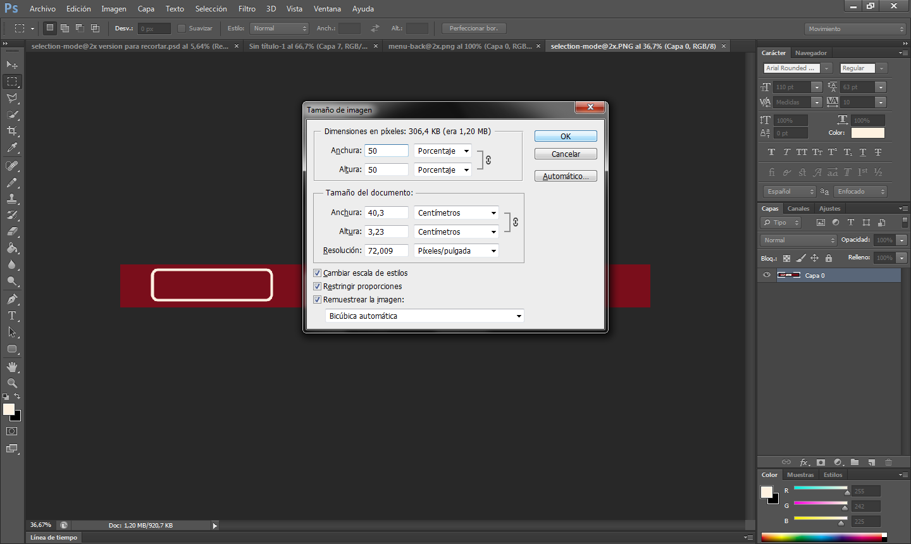
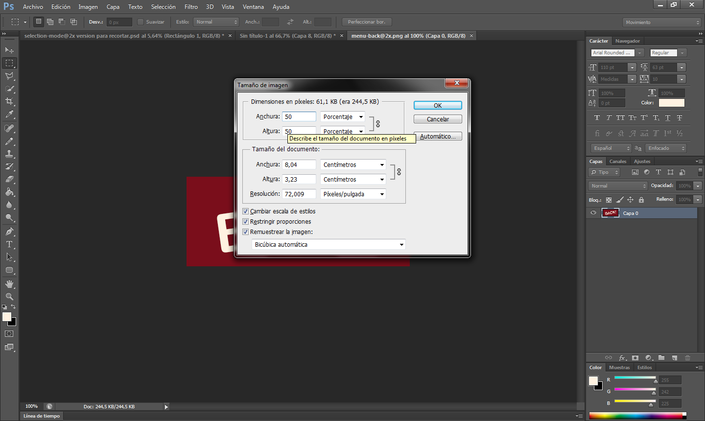
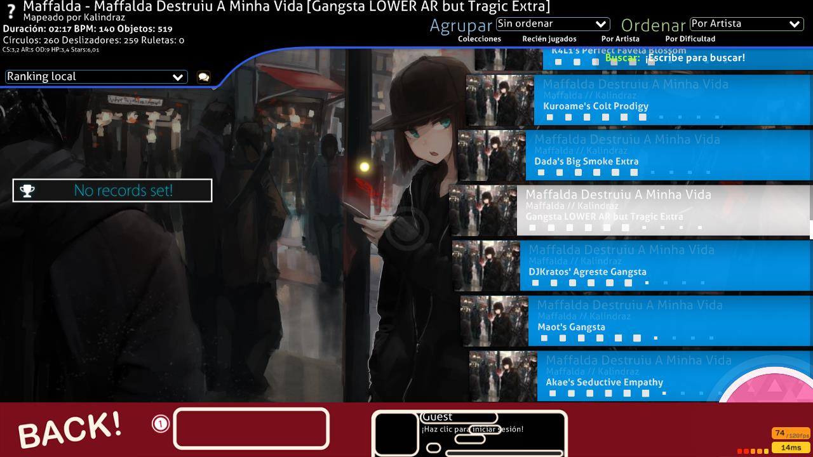
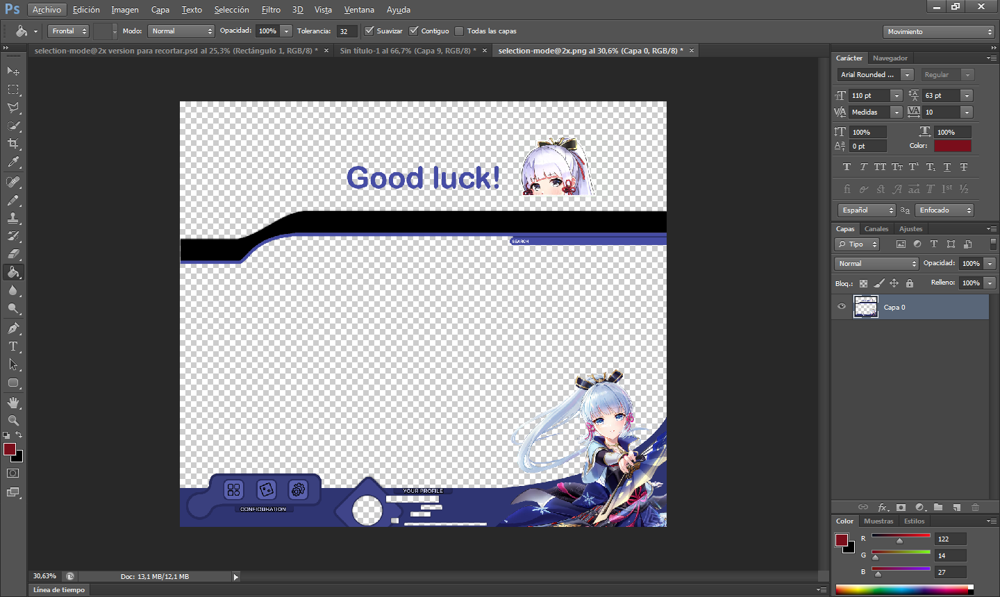
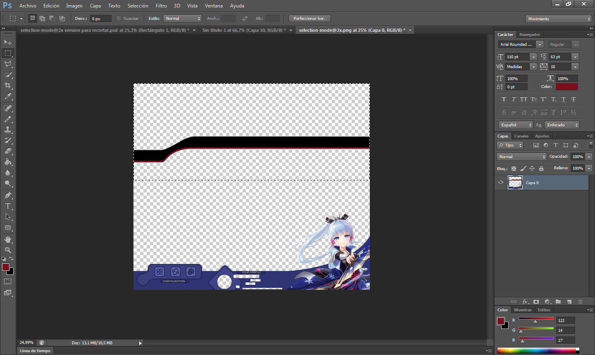